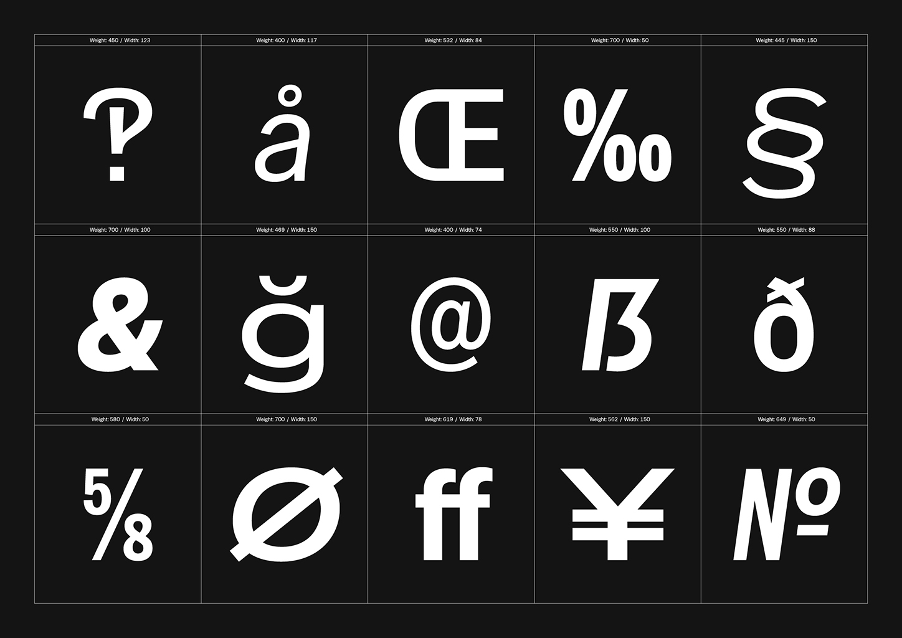
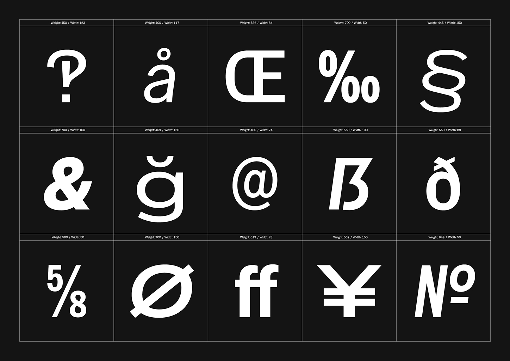

Special Gothic is a multi-width sans serif typeface built as a contemporary reimagining of the raw tenacity offered up by early 20th century Gothic type styles.
Special Gothic was created for and in collaboration with Special Group to celebrate a monumental 15 years as an internationally renowned design and advertising studio.
For the Normal and Expanded versions, see Special Gothic and Special Gothic Expanded.
To contribute, see github.com/AlistairMcCready/Special-Gothic.


 
